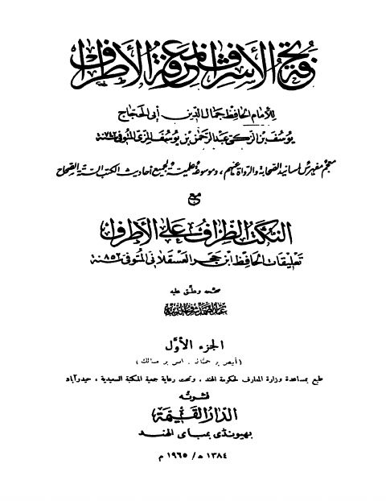

الدار القيمة
Publisher
Resources

فتح الأشراف لمعرفة الأطراف لأبي الحجاج جمال الدين، مع النكت الطراف على الأطراف تعليقات ابن حجر فتح الأشراف لمعرفة الأطراف لأبي الحجاج جمال الدين، مع النكت الطراف على الأطراف تعليقات ابن حجر جمال الدين أبو الحجاج يوسف بن الزكي المزي • أحمد بن علي بن حجر العسقلاني تحفة الأشراف بمعرفة الأطراف للحافظ يوسف بن عبد الرحمن المزي مع النكت الظراف على الأطراف تعليقات ابن حجر العسقلاني
تحفة الأشراف بمعرفة الأطراف للحافظ يوسف بن عبد الرحمن المزي مع النكت الظراف على الأطراف تعليقات ابن حجر العسقلاني
أحمد بن علي بن حجر العسقلاني
تحفة الأشراف بمعرفة الأطراف للحافظ يوسف بن عبد الرحمن المزي مع النكت الظراف على الأطراف تعليقات ابن حجر العسقلاني
تحفة الأشراف بمعرفة الأطراف للحافظ يوسف بن عبد الرحمن المزي مع النكت الظراف على الأطراف تعليقات ابن حجر العسقلاني
أحمد بن علي بن حجر العسقلاني